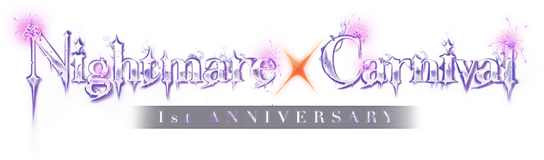
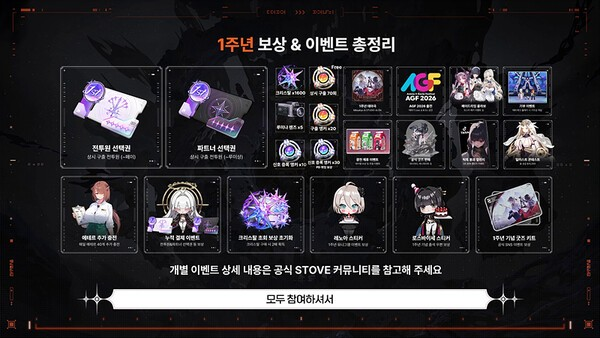
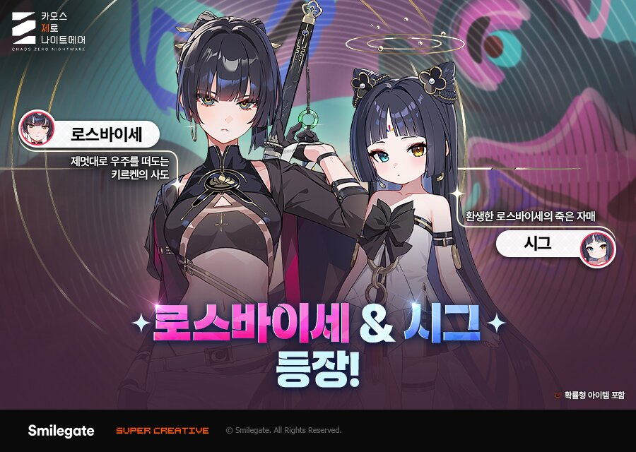
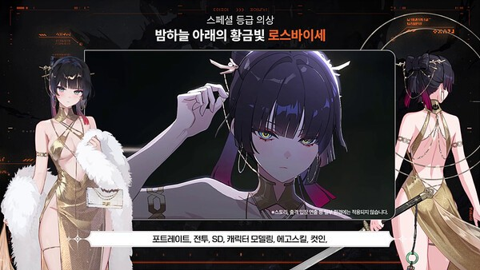
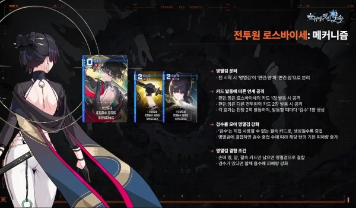
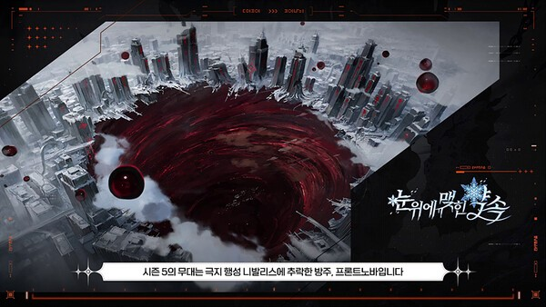

카오스 제로 나이트메어(카제나) 1주년 악몽제 보상 총정리, 신규 전투원 로스바이세 명멸검 구조와 시즌5 소식
※ 해당 게임은 확률형 아이템을 포함하고 있습니다.
카오스 제로 나이트메어(카제나)가 1주년을 맞아 10월 21일(수) 업데이트로 1주년 이벤트 '악몽제'(공식 표기 '악몽x제')를 열었습니다. 은하계 재해 시즌5 '눈 위에 맺힌 약속'이 함께 시작됐고, 1주년 시즈널 전투원 로스바이세도 합류했어요.
오늘은 10월 23일인데요, 공개된 정보 기준으로 일정, 보상, 로스바이세, 시즌5까지 차례대로 짚어 볼게요.

이미지 출처: 카오스 제로 나이트메어 공식 1주년 특설 페이지
보시면 'Nightmare × Carnival' 로고 아래에 '1st ANNIVERSARY'가 붙어 있는데요, 이번 악몽제 공식 특설 페이지에서 쓰는 로고입니다.
1. 카오스 제로 나이트메어 1주년 업데이트 한눈에 보기
카오스 제로 나이트메어의 1주년 업데이트는 10월 21일(수)에 적용됐고, 악몽제는 12월 2일까지 이어진다고 보도됐습니다.
| 구분 | 날짜 | 내용 |
|---|---|---|
| 쇼케이스 방송 | 10월 10일(토) 12시 | 공식 유튜브 온라인 방송 '1주년 악몽제 쇼케이스' |
| 업데이트 적용 | 10월 21일(수) | 시즌5 '눈 위에 맺힌 약속'과 1주년 이벤트 시작 |
| 악몽제 기간 | 10월 21일 ~ 12월 2일 | 접속·출석 보상(보도 기준) |
| 로스바이세·시그 획득 | 업데이트 후 ~ 12월 2일 점검 전 | 약 6주, 두 매체 보도 기준 |
| 나이트메어 드림파크 | ~ 12월 23일 | 시작일은 10월 21일, 일부 매체는 10월 22일로 표기 |
악몽제와 로스바이세 획득 기간이 모두 12월 2일에 끝나서 이 날짜만 기억해 두시면 일정 관리가 한결 편합니다. 종료 시각은 공식 공지로 한 번 더 확인해 보세요.
쇼케이스 방송과 함께 공식 유튜브에는 은하망 뉴스 라이브 '은하계 재해 시즌5 브리핑'과 시즌5 PV도 올라와 있는데요, 영상은 글 맨 아래 링크로 확인하시고, 이 글에는 보도로 정리된 내용만 담았습니다.
2. 악몽제 접속·출석 보상, 크리스탈 1,600개와 무료 구출 70회
악몽제 보상은 계정 레벨 10 이상이라면 받을 수 있고, 크리스탈 1,600개와 상시 구출 무료 70회가 대표 보상으로 보도됐습니다.
| 보상 | 내용(보도 기준) |
|---|---|
| 5성 전투원 선택권 | 게임뷰 보도 기준, 상시 구출 전투원 중 '페이'까지 고를 수 있음 |
| 5성 파트너 선택권 | 게임뷰 보도 기준, 5성 파트너 중 '루이샹'까지 고를 수 있음 |
| 크리스탈 | 1,600개 |
| 루미나 렌즈 | 5장 |
| 다차원 정렬 물질 | 3개 |
| 상시 구출 | 하루 10회씩 7일, 무료 70회 |
| 출석 보상 | 14일 출석 기준 구출 앵커 20개 |

이미지 출처: IPNN 보도 이미지(카오스 제로 나이트메어 공개 화면)
보시면 전투원 선택권과 파트너 선택권, 크리스탈 x1600이 한 화면에 모여 있는데요, 공개된 '1주년 보상 & 이벤트 총정리' 화면입니다. 하단에는 개별 이벤트 상세 내용을 공식 STOVE 커뮤니티에서 참고해 달라는 안내도 적혀 있어요.
눈에 띄는 건 5성 전투원과 5성 파트너를 직접 고르는 선택권 2종입니다. 다만 여러 매체에서 같은 수치로 확인되는 건 크리스탈 1,600개와 무료 구출 70회라서, 이 둘이 가장 믿을 만한 숫자입니다.
나머지 항목은 한두 매체에서만 확인돼서, 수량과 수령 방식은 공식 공지로 한 번 더 확인해 주세요. 크리스탈과 무료 구출이 한꺼번에 들어오는 구성이라, 1주년을 계기로 시작하거나 복귀하려는 분들께는 반가운 이벤트로 보입니다.
3. 나이트메어 드림파크와 기부 이벤트
나이트메어 드림파크는 어트랙션을 짓고 관리자를 배치해 테마파크를 키우는 방치형 타이쿤 이벤트로, 12월 23일까지 진행된다고 보도됐습니다.
- 어트랙션 건설과 관리자 배치로 테마파크 성장
- 보상은 크리스탈, 성장 재화, 한정 이모티콘·스티커 등(매체별 표기가 다름), '신 번뜩임 선택 코어'
- 가상 수익금 일부를 유저 이름으로 결식아동에게 기부(스마일게이트 희망스튜디오)
이벤트를 진행하면 가상 수익금 일부가 기부로 이어지는 구조라 참여하는 재미가 한 겹 더 있어 보여요.
시작일은 10월 21일로 적은 매체가 많고 10월 22일로 적은 곳도 있어서, 정확한 날짜는 공식 공지로 확인해 보시면 됩니다.
4. 카오스 제로 나이트메어 신규 전투원 로스바이세, 키르켄의 사도
로스바이세는 1주년을 기념해 추가된 시즈널 전투원이고, 정의 속성 스트라이커입니다. 파트너는 시그입니다.
순환의 여신 '키르켄'의 사도이면서 신들에게 적의를 품은 인물이며, 과거 이야기는 '트라우마 코드'에서 볼 수 있습니다.
무기는 오방색과 사인검을 모티브로 했다는 소개인데요, 주인장은 이 디자인 설명이 제일 눈길을 끌었어요.

이미지 출처: 인벤 게재 공식 홍보 이미지
보시면 로스바이세에는 '제멋대로 우주를 떠도는 키르켄의 사도'라는 소개 문구가, 옆의 파트너 시그에도 짧은 설명이 붙어 있습니다.
전용 의상 '밤하늘 아래의 황금빛'은 첫 스페셜 등급 외출복으로 소개됐고, 포트레이트와 SD, 에고 스킬, 컷인 등이 바뀝니다. 전용 보이스도 2종에서 46종으로 늘어난다고 해요.

이미지 출처: IPNN 보도 이미지(카오스 제로 나이트메어 공개 화면)
지금 보시는 화면 하단에는 포트레이트, 전투, SD, 캐릭터 모델링, 에고 스킬, 컷인이 바뀐다고 적혀 있습니다.
카드 스킨 16종으로 구성된 카드팩 '밤하늘의 초대'도 함께 공개됐습니다.
정리하면 로스바이세는 카드 발동 횟수로 검수를 쌓아 명멸검의 기본 피해량을 키우는 구조에, 첫 스페셜 등급 외출복과 46종 보이스까지 더해져 눈여겨볼 만한 1주년 전투원입니다.
5. 명멸검 구조로 미리 보는 로스바이세
공개된 정보 기준으로 로스바이세의 핵심 카드 '명멸검'은 턴이 시작될 때 '편린: 명'과 '편린: 암' 두 장으로 갈라졌다가, 조건이 맞으면 다시 한 장으로 합쳐지는 구조입니다.
업데이트 직후라 운영법이나 덱을 단정하기는 이르니, 여기서는 공개된 카드 설명만 따라 읽어 볼게요.

이미지 출처: 게임뷰 보도 이미지(카오스 제로 나이트메어 공개 화면)
보시면 카드가 편린 둘로 나뉜 모습이 보이고, 오른쪽에는 '명멸검 분리', '카드 발동에 따른 연계 공격', '검수를 모아 명멸검 강화', '명멸검 결합 조건' 네 가지 설명이 정리돼 있습니다.
- 분리: 턴 시작 시 '편린: 명'과 '편린: 암'으로 나뉘어 손패 양 끝에 놓입니다.
- 연계 공격: '명'은 로스바이세의 카드 1장이 발동할 때, '암'은 다른 전투원의 카드 2장이 발동할 때 공격합니다. 각 효과는 턴당 2회까지 발동하고, 발동할 때마다 '검수' 1장이 생성됩니다.
- 검수와 결속: '검수'는 직접 쓰지 않는 결속 카드로, 생성될수록 중첩됩니다.
- 재결합: 손패에 명·암·결속 카드만 남으면 명멸검으로 합쳐집니다. 이때 쌓인 검수를 흡수하며, 검수 중첩 수에 따라 그 턴의 기본 피해량이 늘어납니다(공개 화면 기준). 신규 키워드는 '명암'입니다.
이 설명을 풀어 읽으면 로스바이세 본인의 카드뿐 아니라 함께 편성한 다른 전투원의 카드까지 공격 기회로 삼는 구조처럼 보입니다.
파트너 시그도 결속 카드가 겹치면 행동 포인트를 확보해 로스바이세의 공격을 돕는다는 게임뷰 보도가 있는데요, 두 캐릭터가 서로 맞물리게 설계된 점이 눈에 들어와요.
주인장은 손패를 정리하는 일이 곧 결합 조건이 되는 부분에 카드 게임다운 맛이 있다고 보는데요, 실제로 어떻게 굴러가는지는 앞으로 쌓일 공략 자료를 보며 이야기해 볼게요.
6. 카오스 제로 나이트메어 시즌5 '눈 위에 맺힌 약속' 스토리와 천상의 방벽
시즌5 '눈 위에 맺힌 약속'은 은하계 재해의 다섯 번째 시즌으로, 극지 행성에 추락한 방주 '프론트노바'에서 이야기가 시작됩니다.
고립된 함장 일행이 새 카오스 '천상의 방벽'에 도착하며 막이 오릅니다.
최심부의 시즌 보스는 '심판의 대행자 발트라우테'이고, 신과 카오스의 관계, 신들의 목적 같은 세계관의 비밀도 드러날 예정이라고 소개됐어요.

이미지 출처: IPNN 보도 이미지(카오스 제로 나이트메어 공개 화면)
보시면 눈과 얼음에 덮인 도시 한가운데로 붉은 소용돌이가 번져 있고, 하단에는 극지 행성에 추락한 방주 프론트노바가 시즌5의 무대라는 문구가 적혀 있습니다.
- 시즌 보스 전용 컷신과 테마곡 추가(게임인사이트 보도)
- 시즌 재화로 캐릭터 획득용 재화와 성장 재료를 교환하는 보급상점 추가
스토리를 좋아하시는 분이라면 기대가 될 만한 시즌이에요. 분위기는 공식 유튜브의 시즌5 PV로 먼저 만나 보실 수도 있습니다.
7. 쇼케이스가 알려준 앞으로의 일정
보도 기준으로 후속 일정은 지금 메이드리밍 홍대점 콜라보 카페(11월 15일까지)가 진행 중인 가운데, 11월 11일 블레이즈벨 추가, 12월 2일 달리아 추가, 12월 4일부터 6일까지 AGF 2026 참가가 이어집니다.
- 10월 16일 ~ 11월 15일: 메이드리밍 홍대점 콜라보 카페 진행 중(1주년 한정 메뉴와 굿즈)
- 11월 11일: 정의 속성 컨트롤러 '블레이즈벨'과 파트너 '비비안', 전투 배속 기능 등
- 12월 2일: 정의 속성 헌터 '달리아'와 파트너 '에델린'
- 12월 4일 ~ 6일: AGF 2026 참가
1주년 테마곡(미츠키요 작곡·시엘라 가창) 풀버전은 업데이트 하루 전인 10월 20일에 공개될 예정이라고 쇼케이스 보도에 소개됐습니다. 이번 업데이트와 함께 소개된 시스템 개선도 있습니다. 대균열이 '토벌전'과 '공훈전'으로 나뉘고 보스 행동 예고 팝업이 생깁니다. 파트너 '탐사 패시브'(4성 2종, 5성 3종)와 기억의 조각 재구성이 추가되고, 도전 주간은 3회 무료로 열린다고 보도됐어요. 다만 편의성 개선은 시즌 진행에 맞춰 순차 적용된다고 하니, 전부 지금 들어온 것은 아닙니다.
일정이 12월까지 촘촘하게 이어져서 1주년 이후에도 볼거리가 많아 보입니다.
8. 자주 묻는 질문
Q. 쇼케이스 시청 보상 쿠폰은 지금도 쓸 수 있나요?
인벤 보도에는 방송 시청 보상 쿠폰(크리스탈 1,000개 분량)과 SNS 공유 추첨 이벤트(1주년 굿즈 키트 증정)가 소개됐습니다. 다만 쿠폰 사용 기한은 확인된 자료가 없어서 지금도 유효하다고 말씀드리기는 어려워요. 공식 공지와 쿠폰 입력 화면에서 기한부터 살펴보세요.
Q. 연합작전 '코어 브레이크'는 언제 열리나요?
친구 초대와 랜덤 매칭을 지원하는 2인 협동 콘텐츠로 소개됐는데요, 시기는 12월 중 공개 예정이라는 보도와 12월 2일이라는 보도로 갈립니다. 그래서 날짜는 단정하지 않고, 공식 공지가 나오면 그 일정을 기준으로 삼으시길 추천드려요.
▶ 같이 보면 좋은 글
· 카제나 부서진 빛과 발톱 스토리 2장 후기
· 카제나 카오스 제로 나이트메어 테네브리아 세팅 파트너 덱 기억의 조각 공략
· 카오스 제로 나이트메어 카제나 디아나 세팅 파트너 덱 기억의 조각 공략
참고한 곳
· 카오스 제로 나이트메어 공식 1주년 특설 페이지(악몽x제)
· 공식 유튜브 — 1주년 악몽제 쇼케이스
· 공식 유튜브 — 은하망 뉴스 라이브: 은하계 재해 시즌5 브리핑
· 공식 유튜브 — 은하계 재해 시즌5 "눈 위에 맺힌 약속" PV
· 인벤 — 1주년 업데이트 보도
· 게임뷰 — 악몽제 보상과 로스바이세 보도
(2026.10.23 기준)